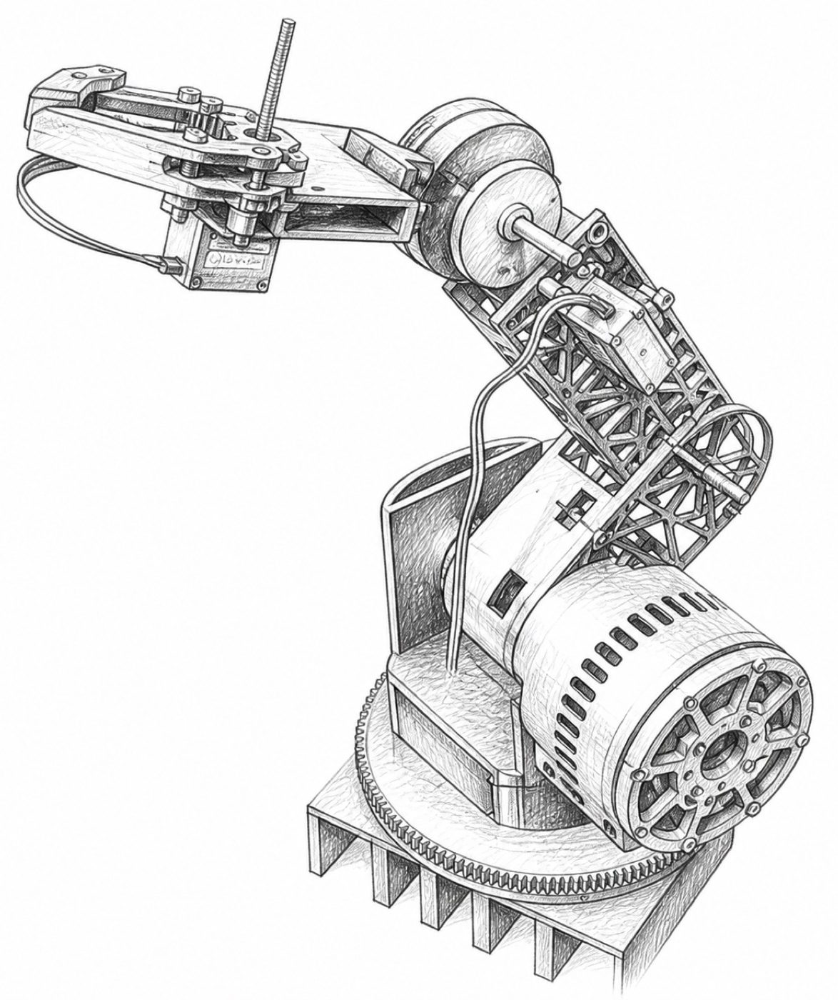

Aakarsh Sangar

First-Year Engineering Student · Purdue University
About Me
I am Aakarsh, a First-Year Engineering student at Purdue University interested in mechanism design, robotic actuation, and controls. My experience is rooted in hands-on development: designing and fabricating a custom robotic arm, creating system-level CAD and building mechanisms for FTC Robotics, and completing drone hardware and camera bring-up during a ModalAI internship.
For my robotic arm, I designed the assembly and custom components in CAD, manufactured the structure through additive fabrication, integrated a 24 V stepper power system, and developed a compact 8:1 planetary shoulder actuator in response to mechanical packaging constraints. I understand forward kinematics and am now learning inverse kinematics while strengthening my Python and C++ skills for motion-control software.
My longer-term technical interest is torque-dense, efficient actuation. I want to study motor fundamentals deeply enough to design and build a custom electric motor, then investigate gearbox architectures that increase usable joint torque within tight packaging constraints. I am still exploring which robotic applications I want to pursue, and I am using the arm as a platform for learning through design, testing, and iteration.
The Projects page documents the hardware, engineering decisions, failures, and revisions behind this work.